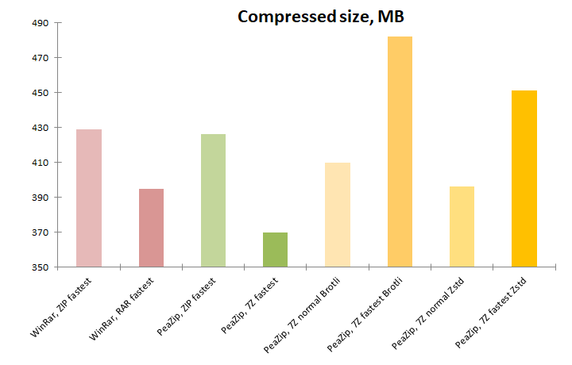

|
Goals
Find fastest
compression algorithms.
Analyze
modern compression algorithms capable of providing performances equal
or
better than fastest commonly available implementation of classic
Deflate algorithms, employed in obiquitous ZIP format.
Comparison is conducted in terms of compression / extraction speed and
compression ratio, with special focus on comparison with best possible
performances of Deflate ZIP.
|
|
Software
settings
Benchmarks
are conducted
on Windows 10 64 bit using 64 bit versions of:
- PeaZip 10.6.0
- WinRar 7.11
|
|
Hardware
settings
Notebook with Intel Core i7-8565U CPU, 4
physical cores with hyper-threading (8 logical cores), 8 GB RAM
System disk 512 GB PCIe NVMe SSD, NTFS filesystem.
The system reaches a score of 23500 on 7-Zip benchmark, which can be
considered entry level for today's standards. |
|
|
|
Compression
formats compared in this benchmark
- 7Z file
format
Open Source archive format
by 7-Zip, providing strong and efficient compression and good
performances on multicore machines, tested with:
- LZMA2 (strong
compressor) default algorithm, set at fastest compression level
- Brotli algorithm (fast
compressor), set at normal and fastest compression
level
- Zstandard algorithm (fast compressor), set at normal
and fastest
compression
level
- RAR file
format
(RarLabs RAR5 revision) proprietary archive format providing
better
compression that ZIP using PPMd algorithm, tested
at fastest compression level
- ZIP file
format
widely used archive format, tested at fastest compression
levels (with
Deflate algorithm)
|
Input data
Same set of data of "Out-of-the-box" compression benchmark is used:
input contains 43 files in 4 directories for total 1.22 GB
(1,318,000,857 bytes), composed by well known reference files
representative of different data structures, widely used for
compression
benchmarks:
|
|
|
Faster than zip
compression
benchmark methods
Benchmark
input data is saved to system disk (PCIe SSD) and compressed to system
disk, same partition, separate directory; the resulting archives are
then extracted to
separate directory on same (system) disk/partition.
Each compression and extraction test is repeated 5 times to get an
average value; size is expressed in MB, time in seconds.
Each format is tested at fastest compression level - "Store" level,
while technically faster, was not employed, as it does not involve
actual compression.
WinRar is chosen as reference for the fastest commonly available ZIP
Deflate implementation, due results of previous "out-of-the-box"
bencharks.
A special focus is given to compare performances of ZIP Deflate with
non-Deflate algorithms as viable alternatives for faster-than-zip
compression, and possibly for overall more efficient than zip
compression both in terms of speed and compression ratio.
Faster than zip
compression
benchmark results
table, the lower the better for all columns
|
Compressed
size (MB)
|
Compression
ratio
|
Compression
time (sec)
|
Extraction
time (sec) |
WinRar,
ZIP fastest
|
429
|
34.13%
|
15.6
|
8.6
|
| WinRar,
RAR fastest |
395
|
31,42%
|
14.5
|
7.0
|
| PeaZip,
ZIP fastest |
426
|
33,89%
|
29.5
|
9.6
|
| PeaZip, 7Z
fastest |
370
|
29,44%
|
28.1
|
3.9
|
| PeaZip,
7Z
normal Brotli |
410
|
32.62%
|
5.2
|
2.2
|
| PeaZip, 7Z
fastest Brotli |
482
|
38,55%
|
2.1
|
2.2
|
| PeaZip,
7Z
normal Zstd |
396
|
31,50%
|
5.4
|
2.7
|
| PeaZip, 7Z
fastest Zstd |
451
|
35,88%
|
2.0
|
3.2
|
Archive size in MB (lower
better), compression ratio of input data, and time in seconds (lower
better) to complete compression and de-compression of data.
Faster than zip
compression
ratio
results
ZIP Deflate compression ratio is quite similar in WinRar and PeaZip at
fastest compression settings, with a slight size advantage for PeaZip.
RAR and 7Z (with default LZMA2 algorithm) outperforms ZIP in terms of
compression ratio, with a significant output size advantage for 7Z
format.
Both Brotli and Zstandard, at normal compression level, reaches a
better compression ratio than ZIP Deflate (Zstd providing the best CR).
Swithcing to fastest compression level, makes Brotli and Zstd reache a
worse compression ratio than
Deflate, with Brotli reaching the
worse compression ratio in the benchmark.

Faster than zip
compression
speed
results
WinRar
outperforms PeaZip in ZIP fastest compression test with a 2x faster
speed, and RAR format (slightly faster than ZIP) outperforms 7Z format
(with LZMA2) by the same margin.
The clear winners of
the test, however, are Brotli and Zstd algorithms,
with "PeaZip 7Z fastest Brotli" and "PeaZip 7Z fastest Zstd" being
almost 8x faster than WinRar's ZIP which is the fastest Deflate
implementation tested in this benchmark (same holds true in regards of
RAR, which is almost as fast as ZIP at this compression level).
At normal compression level Brotli and Zstd stays faster than fastest
Deflate by almost a 3x factor.

Faster than zip
extraction
speed results
As for ZIP
format, WinRar provides a slightly faster extraction than PeaZip.
7Z format with LZMA2 performs de-compression nearly twice as faster
than RAR format, while Ztsd improves slightly decompression time, and
Brotli wins the benchmark with fastest extraction speed - almost
4x time faster than Deflate de-compression.
Extraction times stays fast for Zstd and, especially, for Brotli, even
switching from fastest to normal compression level.
|
While creating
Deflate-based ZIP archives remains an excellent choice due the
ubiquitous support from file archivers and file managers (and built-in
support in many operating systems), it is no longer the better choice
performances-wise.
New algorithms performs better on modern architectures and scales
better in performances on multicore machines, providing better results
in terms of speed, especially for extraction, and compression ratio.
What formats are faster
tha ZIP on modern hardware?
With WinRar, creating a RAR (PPMd algorithm)
at fastest compression level resulted
in a smaller archive AND took slightly less time than creating a ZIP
archive with same app at same compression setting, with even more
evident advantage in extraction speed.
The same holds true with PeaZip with 7Z LZMA2 being faster than ZIP on the
same app at fastest compression level,
with
the additional bonus of 7Z extraction being over twice faster than
fastest Deflate implementation, a feature that is especially
important for content distribution.
Switching 7Z
format from LZMA2 to Brotli and
Zstandard algorithms,
which are
ground up designed for high performances (real-time or near-real-time
compression), provides utter efficiency improvements.
At normal compression level, Brotli and Zstd provide better compression
ratio AND a comprerssion / extraction speed improvement in the range of
3x compared to best
Deflate implementation at fastest compression level.
At fastest compression level, Brotli and Zstd provide slightly inferior
compression ratio and reaches 8x
faster compression than fastest
ZIP Deflate implementation, and almost 4x
faster decompression.
In this benchmark, Zstandard provides consistently better compression
than Brotli (at normal and fastest compression settings) but Brotli
provides consistently faster extraction speeds.
Conclusions in
brief:
On modern machines using RAR or 7Z format at fastest
compression level can provide both compression ratio and speed
improvements (and especially faster
extraction) than using traditional ZIP format.
Switching to Brotli and Zstd, which are also available as optional
codecs for 7Z format, further increase compression efficiency, with
large improvements in terms of speed - but in some cases even in
terms of better compression ratio - even compared to fastest Deflate
implementations.
Learn more about how to use Brotli
and Zstandard compression in 7z files, how to create RAR archives directly
from PeaZip GUI (providing WinRar is available on the machine), and how to create ZIP archives.
Synopsis: Fast compression
benchmark: faster than fastest ZIP. Comparative of
WinRar and PeaZip on RAR, 7Z LZMA2, Brotli, Zstandard performances and
speed. Wht is the fastest compression format, what is the fastest
compressor, which file archiver is faster. What are algorithms faster
than Deflate.
Topics: what are the fastest
compression and decompression algorithms, Deflate vs Brotli vs
Zstandard speed comparison, what are the compressors faster than zip
Deflate
PeaZip > Compression
benchmark > Fast compression: faster than fastest ZIP comparative
|
|